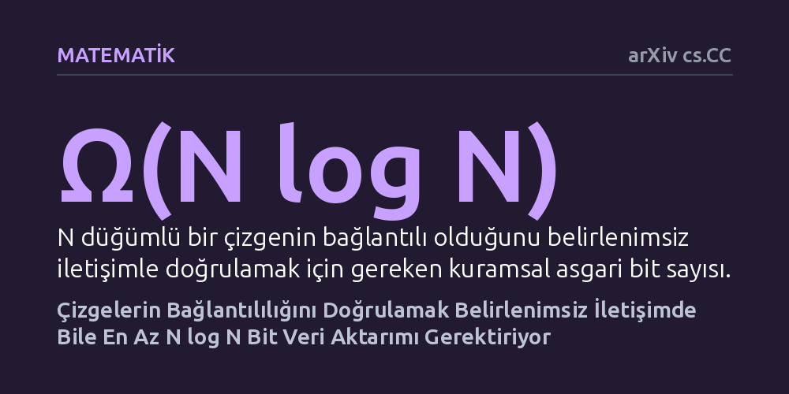

MATEMATIK · arXiv cs.CC · 2026-10-27
İki tarafın ellerindeki çizge parçalarının birleşerek bağlantılı bir ağ oluşturup oluşturmadığını anlamak için gereken asgari iletişim miktarı incelendi. Araştırma, tahmin yeteneği içeren belirlenimsiz protokollerde dahi en az N log N bit aktarımı gerektiğini kanıtlayarak 1986'dan bu yana açık duran problemi çözdü.
Bir ağın kopuk olmadığını doğrulamanın kestirme bir yolu olmadığını ve en elverişli tahmin modellerinde bile temel bir iletişim sınırının altına inilemeyeceğini gösteriyor.

Modern bilgi işlemde büyük ağlar genellikle tek bir merkezde tutulmaz. Farklı sunucular veya veri merkezleri, devasa bir iletişim ağının yalnızca kendilerine düşen parçalarını görür. Ortadaki temel soru şudur: İki taraf, ellerindeki parçaların birleştiğinde kesintisiz tek bir ağ oluşturup oluşturmadığını, yani ağın bağlantılı olup olmadığını birbirlerine mümkün olduğunca az veri aktararak nasıl anlayabilir? Bu soru, László Babai, Péter Frankl ve Janos Simon'ın 1986 yılındaki öncü çalışmalarından bu yana iletişim karmaşıklığı kuramının en köklü açık problemlerinden biriydi.
Eğer taraflar birbirlerine belirlenimli (deterministik) kurallarla mesaj gönderiyorsa, N düğümlü bir çizgede bağlantılılığı doğrulamak için N log N düzeyinde bit aktarımı gerektiği 1988'de kanıtlanmıştı. Ancak bilgisayar biliminde çok daha güçlü bir kavram vardır: Belirlenimsizlik. Belirlenimsiz bir protokolde taraflar her şeyi sıfırdan aramaz; her şeyi bilen kuramsal bir tanık onlara ağın bağlantılı olduğuna dair bir kanıt sunar ve taraflar sadece bu kanıtın geçerli olup olmadığını teyit eder. On yıllardır merak edilen mesele, doğrulama kolaylığının iletişim yükünü gerçekten azaltıp azaltamayacağıydı.
Yazar Zhijun Zhang, bu probleme deneysel testlerle ya da bilgisayar simülasyonlarıyla değil, saf matematiksel karmaşıklık kuramı ispatıyla yaklaşıyor. İletişim karmaşıklığında bir alt sınır kanıtlamak, tasarlanabilecek hiçbir akıllıca protokolün bu maliyetin altına inemeyeceğini kesinleştirmek demektir. Bunun geleneksel araçlarından biri, iletişim matrisinde girdi çiftlerinin aynı cevabı ürettiği tekrenkli dikdörtgenlerin boyutunu üstten sınırlandırmaktır.
Konuya dair önceki en iyi kuramsal sınır, 1995 yılında Ran Raz ve Boris Spieker tarafından geliştirilmiş ve en az N log log N bit gerektiğini göstermişti; fakat bu sonuç kuramsal olarak beklenen N log N sınırının belirgin şekilde gerisinde kalıyordu. Zhang, tekrenkli dikdörtgenlerin azami büyüklüğünü çok daha sıkı biçimde sınırlayan yeni bir teknik kurdu. Bu teknikte, iletişim teorisinin iki temel problemi olan iç çarpım ve işaretçi takibi yenilikçi bir bileşimle harmanlanarak analize dahil edildi.
Çalışmanın temel bulgusu, çizge bağlantılığını belirlenimsiz iletişim protokolleriyle doğrulamanın da en az N log N mertebesinde veri aktarımı gerektirdiğini kanıtlamasıdır. Başka bir deyişle, elinizde ağın bağlantılı olduğunu gösteren mükemmel bir kanıt veya ipucu olsa dahi, iki tarafın bu kanıtı teyit edebilmesi için belirlenimli yaklaşımla aynı büyüklükte bilgi paylaşması zorunludur. Böylece kırk yıla yakın süredir çözülemeyen optimal alt sınır kanıtlanmış oldu.
Yazar geliştirdiği tekniği ağırlıklı ve neredeyse tekrenkli dikdörtgenlere genişleterek rastgele protokoller için de genel sonuçlara ulaştı. Hata payı içeren rastgele protokollerde, polinom derecesinde küçük hata olasılıkları için N log N sınırının optimal kaldığı gösterildi. Ayrıca sabit hata olasılığı altında r turlu herhangi bir protokolün N/r log N kadar iletişim gerektirdiği kanıtlandı; bu da daha önce yalnızca bir ve iki turlu iletişim için bilinen sınırları tüm sabit tur sayılarına taşıdı.
Elde edilen sonucun etkisi yalnızca iki taraf arasındaki soyut mesajlaşmayla sınırlı değildir. Çizge bağlantılığı, bilgisayar bilimindeki pek çok algoritmanın omurgasını oluşturur. Kanıtlanan bu alt sınır; döngü tespiti ya da iki nokta arasında yol bulunması gibi diğer temel ağ özelliklerine de doğrudan aktarılabilmektedir.
Ayrıca bu matematiksel sınır, veri akışı algoritmaları ve sorgu karmaşıklığı modelleri için de doğrudan sonuçlar doğurmaktadır. Devasa ağ verilerinin hafızaya sığmayıp tek geçişte incelendiği akış algoritmalarında mevcut yöntemlerin neden daha az bellek harcayamayacağı bu kanıtla kuramsal olarak netleşmiştir. Ancak çalışmanın henüz bağımsız hakem denetiminden geçmemiş bir önbaskı olduğu ve ispatın bilim dünyası tarafından doğrulanmasının beklendiği göz ardı edilmemelidir.